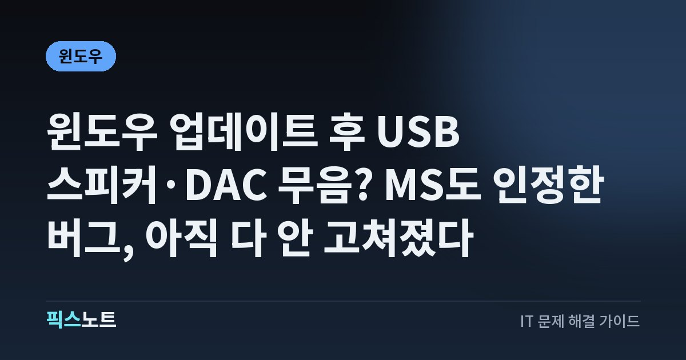

윈도우 업데이트 후 USB 스피커·DAC 무음? MS도 인정한 버그, 아직 다 안 고쳐졌다
9월 윈도우 업데이트 뒤 USB 오디오가 무음이거나 코드 10이 뜰 때 해당 여부 확인과 대처 순서.

윈도우 업데이트를 한 뒤로 USB로 꽂은 스피커나 DAC, 오디오 인터페이스에서만 소리가 안 나고 장치 관리자에 ‘코드 10’이 뜬다면, 새 장비를 주문하기 전에 잠깐 멈추세요. Microsoft가 9월 8일 보안 업데이트(KB5124008) 뒤 생긴 문제로 공식 인정했고, 9월 29일 기준으로 일부만 고쳐진 상태예요. 내 장치가 해당되는지 확인하는 법과 지금 할 수 있는 대처를 순서대로 정리했어요.
결론부터: 새 DAC 사기 전에 이것부터 확인하세요
Microsoft는 2026년 9월 8일 윈도우 보안 업데이트(KB5124008)를 설치한 뒤 일부 USB Audio Class 1.0 장치가 시작되지 않거나 소리를 내지 못할 수 있다고 공식 문서에 올렸어요. 공개된 증상은 이래요.
- 장치 관리자에 ‘이 장치를 시작할 수 없습니다(코드 10)’ 표시
- 소리가 아예 안 나옴
- 볼륨 조절이 안 되거나 0에서 안 움직임
- 소리 설정이 응답하지 않거나 사용할 수 없음
- 스테레오는 되는데 8채널이나 3D 오디오에서만 안 됨
업데이트 직후부터 USB 오디오만 이렇게 됐고 노트북 스피커나 다른 출력은 멀쩡하다면, 장비 고장보다 이 문제일 가능성이 커요.
내 장치가 해당되는지 가르는 법
Microsoft 설명으로는 이 문제가 USB Audio Class 1.0 장치에만 해당돼요. 블루투스 이어폰, HDMI 모니터 스피커, 메인보드 내장 오디오까지 모두 안 된다면 원인이 다른 곳에 있을 수 있어요.
- 설정 > 시스템 > 소리에서 출력 장치 목록에 USB 장치가 보이는지 봐요.
- 장치 관리자의 ‘사운드, 비디오 및 게임 컨트롤러’에서 해당 장치를 열고 상태에 코드 10이 있는지 봐요.
- 같은 창의 드라이버 탭에서 ‘드라이버 세부 정보’를 눌러요. usbaudio.sys가 보이면 윈도우 기본 USB Audio 1.0 드라이버, usbaudio2.sys가 보이면 USB Audio 2.0 드라이버예요.
- 설정 > Windows 업데이트 > 업데이트 기록에서 9월 보안 업데이트 설치 날짜를 확인해요.
지금 할 수 있는 첫 번째: 최신 업데이트 설치
Microsoft는 9월 14일 긴급(대역 외) 업데이트 KB5129195와 그 이후 업데이트로 이 문제를 ‘부분적으로’ 해결했다고 밝혔어요. 그러니 첫 단계는 최신 업데이트를 받는 거예요.
- 설정 > Windows 업데이트에서 ‘업데이트 확인’을 눌러요.
- KB5129195 또는 그 이후 업데이트를 설치하고 재부팅해요.
- USB 오디오 장치를 뽑았다가 다시 꽂고 소리가 나는지 봐요.
멀티채널에서만 안 된다면: 2채널로 바꿔 보기
스테레오로는 소리가 나는데 8채널이나 3D 오디오를 켰을 때만 안 된다면, 출력을 2채널로 바꿔서 증상이 달라지는지 보세요. Microsoft 문서에도 일부 사용자가 2채널 모드로 바꿔 소리를 되찾았다는 내용이 있어요.
- 설정 > 시스템 > 소리 아래쪽의 ‘추가 소리 설정’을 눌러요.
- 재생 탭에서 USB 장치를 고르고 ‘구성’을 눌러 스테레오로 바꿔요.
- 공간 음향을 켜 뒀다면 해당 장치 설정에서 꺼요.
- 소리가 돌아오면 최신 업데이트(KB5129195 이후)를 설치한 뒤 원래 설정으로 다시 시험해요.
드라이버를 마구 지우면 안 되는 이유
코드 10을 보면 드라이버를 지웠다 깔거나 인터넷에서 찾은 드라이버를 억지로 설치하고 싶어져요. 그런데 증상이 업데이트 시점과 딱 맞고 Microsoft가 같은 증상을 알려진 문제로 추적 중이라면, 드라이버를 바꿔도 해결되지 않을 수 있어요.
- 출처를 알 수 없는 드라이버, 오래된 드라이버 패키지, 레지스트리 청소 프로그램은 피해요.
- 제조사 전용 드라이버가 있는 오디오 인터페이스라면 제조사 지원 페이지에서 현재 윈도우 버전용 드라이버가 따로 나왔는지 확인해요.
- 여러 항목을 한꺼번에 바꾸지 마세요. 무엇을 바꿨을 때 달라졌는지 알 수 없게 돼요.
영향 받는 윈도우 버전 확인
이 문제는 윈도우 11만의 문제가 아니에요. Microsoft 릴리스 상태 문서에는 윈도우 11 26H2, 26H1, 25H2, 24H2, 23H2와 윈도우 10 22H2, 21H2 같은 버전이 영향 범위로 올라가 있고, 서버 버전도 포함돼요.
- 시작 버튼을 오른쪽 클릭하고 실행을 눌러 winver를 입력해 버전과 OS 빌드를 확인해요.
- 설정 > Windows 업데이트 > 업데이트 기록에서 9월 보안 업데이트 번호를 확인해요.
- 다른 사람이 말하는 KB 번호를 그대로 찾기보다 내 버전에 맞는 최신 누적 업데이트를 받아요.
윈도우 11 24H2·25H2에서는 9월 8일 업데이트가 KB5124008이지만, 다른 버전은 번호가 달라요.
업데이트 뒤에도 안 되면: 고장인지 가르는 순서
최신 업데이트와 재부팅까지 했는데도 그대로라면, 하드웨어 문제인지 윈도우 문제인지 교차로 확인해요. 한 번에 하나씩만 바꾸는 게 요령이에요.
- 같은 PC의 내장 스피커나 HDMI 오디오는 정상인지 봐요.
- USB 오디오 장치를 다른 USB 포트에 직접 꽂아요.
- 허브를 쓰고 있었다면 허브를 빼고 연결해요.
- 가능하면 다른 PC에 꽂아서 정상 작동하는지 봐요.
다른 PC에서는 잘 되는데 9월 업데이트가 깔린 PC에서만 코드 10이 반복된다면 윈도우 쪽 문제일 가능성이 커요. 반대로 어느 PC에서도 인식이 끊기거나 전원이 안 들어온다면 케이블이나 장치 고장을 의심하세요.
업무·방송용이라면: 대체 경로 만들고 수정 소식 확인
녹음, 화상회의, 수업, 방송처럼 USB 오디오가 꼭 필요한 PC라면 수정될 때까지 쓸 대체 출력 장치를 하나 준비해 두는 게 좋아요. Microsoft 문서에서 이 문제는 아직 ‘완화’ 상태라, 코드 10과 일반 무음 증상은 앞으로 나올 업데이트에서 달라질 수 있어요.
- Microsoft 윈도우 11 릴리스 상태 페이지에서 USB 오디오 항목의 상태와 마지막 업데이트 날짜를 확인해요.
- 설정 > Windows 업데이트를 주기적으로 확인해요.
- 문제가 계속되면 장치 모델명, 윈도우 버전과 빌드, 설치된 KB 번호, 장치 관리자 오류 코드를 정리해 제조사나 Microsoft 지원에 전달해요.
자주 묻는 질문
USB Audio Class 1.0 장치인지 어떻게 알아요?
장치 관리자에서 해당 오디오 장치의 속성을 열고 드라이버 탭의 ‘드라이버 세부 정보’를 보세요. 윈도우 기본 드라이버 중 usbaudio.sys가 쓰이면 USB Audio 1.0, usbaudio2.sys가 쓰이면 USB Audio 2.0 드라이버예요.
KB5129195를 설치했는데 아직 소리가 안 나요.
그럴 수 있어요. 이 업데이트가 고친 건 8채널·3D 오디오 모드 증상이고, 코드 10이나 일반 무음은 Microsoft가 아직 수정 중이에요. 릴리스 상태 페이지를 확인하면서 다음 업데이트를 기다리세요.
업데이트를 지우면 소리가 돌아오나요?
보안 업데이트를 지우면 그 업데이트로 막은 보안 문제가 다시 열려요. Microsoft도 제거를 해결책으로 안내하지 않았어요. 보안을 포기하기보다 최신 업데이트 설치와 2채널 전환 같은 대처를 먼저 해 보세요.
블루투스 이어폰도 소리가 안 나는데 같은 문제인가요?
Microsoft가 밝힌 범위는 USB Audio Class 1.0 장치예요. 블루투스나 HDMI처럼 USB가 아닌 출력까지 모두 안 된다면 이 버그와는 다른 원인일 가능성이 커서, 소리 설정의 출력 장치 선택과 드라이버 상태부터 따로 확인해야 해요.